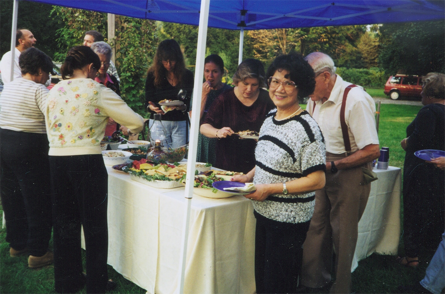
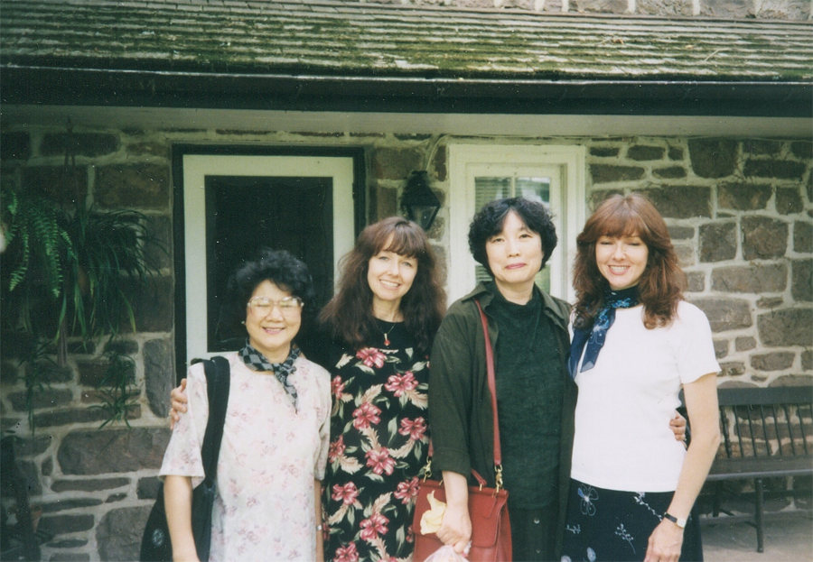

The few mainstream social groups, to which my husband and I once belonged, provided us with great opportunities to connect with people who love good food. We enjoyed the activities at the Mushroom Club and Community without Walls, but most memorable of all was the Culinary Society of Philadelphia.
From the beginning, I found the CSP absolutely irresistible. My husband and I were the only Chinese members of a group of some 60 Americans. However, at our first meeting of a potluck dinner, I was impressed not only by everyone’s friendliness and enthusiasm, but also by how open they were to sharing their recipes and ideas. We found ourselves warmly received and totally comfortable in their midst. Our common interest in food seemed to have made the cultural difference disappear.
My husband and I were fortunate enough to join the CSP in its peak years. Throughout the 90s’, we enjoyed some of the most interesting programs, which involved visiting nurseries, vineyards, and bakeries in the vicinity of Philadelphia. We also had the privilege of dining at a few fancy restaurants there as well, such as Le Bec Fin, the Ritz Hotel, and White Dog Café, to name just a few. Each meeting provided a chance to discover a new menu, as well as to connect with other members. It was here in this lovely group that we met some of our most treasured and lifelong culinary friends. We were heartbroken when we were told the sad news of CSP’s closing.
Our lasting friendship with Columnist Joe Colanero (passed away in 2009) and restaurant entrepreneur Margaret Kou will be told in the next update.